Inverse problems arise in scientific applications such as biomedical imaging, computer graphics, computational biology, and geophysics, and computing accurate solutions to inverse problems can be both mathematically and computationally challenging.
Assume that
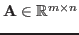
and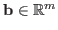
are given, then a linear inverse problem can be written as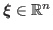
is the desired solution and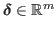
is additive noise. We assume the underlying problem (1) is ill-posed. A main challenge of ill-posed inverse problems is that small errors in the data may result in large errors in the reconstruction. In order to obtain meaningful reconstructions, regularization is needed to stabilize the inversion process. This is typically done by incorporating prior knowledge of the unknown solution and of the noise in the data. Here, we incorporate probabilistic information and assume that the true parameters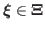
and the noise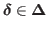
are realizations of random variables from some (eventually unknown) probability distributions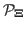
and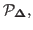
both with finite second moments.In this work, we are interested in finding a low rank optimal regularized inverse matrix
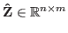
that gives a small reconstruction error. That is,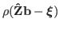
should be small for some given error measure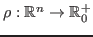
, e.g.,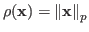
. The particular choice of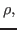
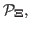
and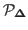
determine the regularization matrix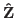
. Notice that once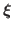
by simple matrix-vector multiplication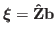
. Our approach is especially suitable for large scale problems where (1) is solved repeatedly for various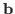
.In this talk, we focus on efficient approaches to numerical compute optimal low-rank regularized inverse matrices. In real-life applications, probability distributions and are typically not known explicitly. However, in many applications, calibration or training data are readily available, and this data can be used to compute a good regularization matrix. Let
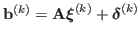
for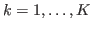
, where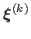
and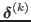
are independently drawn from the corresponding probability distributions. Then the goal is to solve the empirical Bayes risk minimization problem,